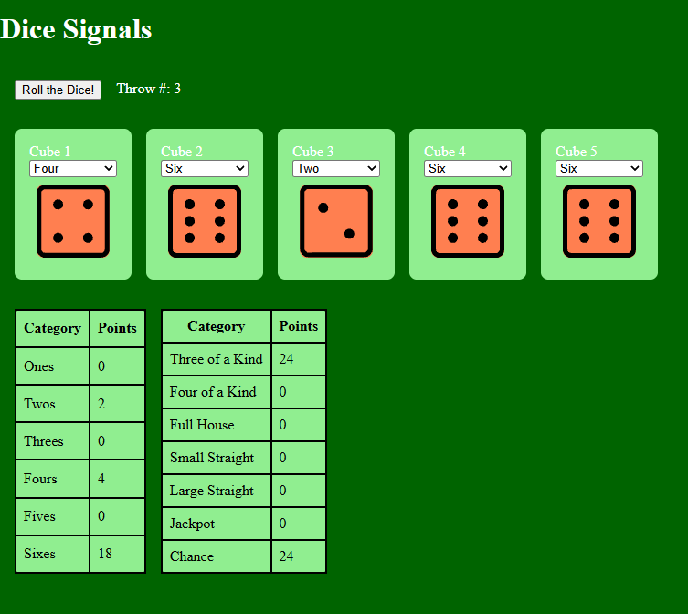

Based on Signals from Angular Foundation
Denis Pokojski
Which one I should use?
Input signals replace the old @Input() decorators
Input signals can be defined as required property
Parent component must pass required properties
New notation for outputs corresponding to inputs is available
View Child signals replace the old @ViewChild() decorators
Content Child signals replace the old @ContentChild() decorators
Linked signals are similar to writable signals, but they also react to changes of another source signal
Value can be changed

| RxJS | Signals |
|---|---|
| Exercises 01 and 02 | Exercises 01 and 02 |
Start with task 01 on branch exercise-01-rxjs. Try to fill the gaps marked by "Todo".
For task 02 you can either continue to work on your solution of task 01 or check out the branch exercise-02-rxjs which already contains a solution for task 01.
See readme files on the branches for more info
| Task | RxJS | Signals |
|---|---|---|
| Task 01 | exercise-01-rxjs | exercise-01-signals |
| Task 02 | exercise-02-rxjs | exercise-02-signals |
| Sample Solution | solution-with-rxjs | solution-with-signals |